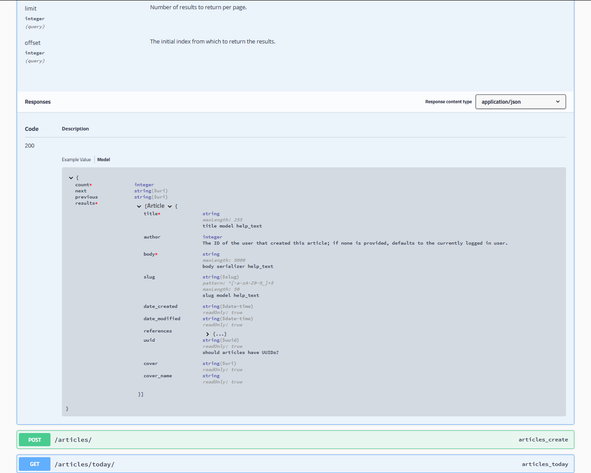
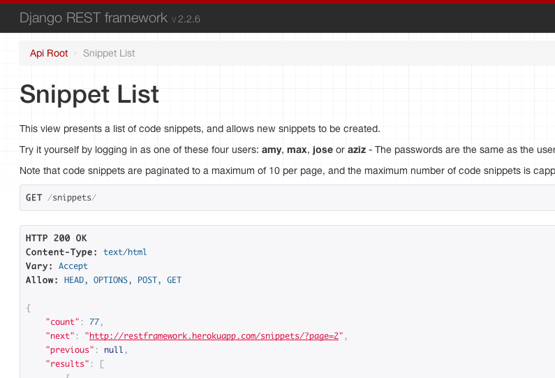

Documenting your API¶
A REST API should spend almost all of its descriptive effort in defining the media type(s) used for representing resources and driving application state.
— Roy Fielding, REST APIs must be hypertext driven
REST framework provides a range of different choices for documenting your API. The following is a non-exhaustive list of some of the most popular options.
Third-party packages for OpenAPI support¶
REST framework recommends using third-party packages for generating and presenting OpenAPI schemas, as they provide more features and flexibility than the built-in (deprecated) implementation.
drf-spectacular¶
drf-spectacular is an OpenAPI 3 schema generation library with explicit focus on extensibility, customizability and client generation. It is the recommended way for generating and presenting OpenAPI schemas.
The library aims to extract as much schema information as possible, while providing decorators and extensions for easy customization. There is explicit support for swagger-codegen, SwaggerUI and Redoc, i18n, versioning, authentication, polymorphism (dynamic requests and responses), query/path/header parameters, documentation and more. Several popular plugins for DRF are supported out-of-the-box as well.
drf-yasg¶
drf-yasg is a Swagger / OpenAPI 2 generation tool implemented without using the schema generation provided by Django Rest Framework.
It aims to implement as much of the OpenAPI 2 specification as possible - nested schemas, named models,
response bodies, enum/pattern/min/max validators, form parameters, etc. - and to generate documents usable with code
generation tools like swagger-codegen.
This also translates into a very useful interactive documentation viewer in the form of swagger-ui:

Built-in OpenAPI schema generation (deprecated)¶
Warning
Deprecation notice: REST framework's built-in support for generating OpenAPI schemas is deprecated in favor of third-party packages that provide this functionality instead. As a replacement, we recommend using drf-spectacular.
There are a number of packages available that allow you to generate HTML documentation pages from OpenAPI schemas.
Two popular options are Swagger UI and ReDoc.
Both require little more than the location of your static schema file or
dynamic SchemaView endpoint.
A minimal example with Swagger UI¶
Assuming you've followed the example from the schemas documentation for routing
a dynamic SchemaView, a minimal Django template for using Swagger UI might be
this:
<!DOCTYPE html>
<html>
<head>
<title>Swagger</title>
<meta charset="utf-8"/>
<meta name="viewport" content="width=device-width, initial-scale=1">
<link rel="stylesheet" type="text/css" href="//unpkg.com/swagger-ui-dist@3/swagger-ui.css" />
</head>
<body>
<div id="swagger-ui"></div>
<script src="//unpkg.com/swagger-ui-dist@3/swagger-ui-bundle.js"></script>
<script>
const ui = SwaggerUIBundle({
url: "{% url schema_url %}",
dom_id: '#swagger-ui',
presets: [
SwaggerUIBundle.presets.apis,
SwaggerUIBundle.SwaggerUIStandalonePreset
],
layout: "BaseLayout",
requestInterceptor: (request) => {
request.headers['X-CSRFToken'] = "{{ csrf_token }}"
return request;
}
})
</script>
</body>
</html>
Save this in your templates folder as swagger-ui.html. Then route a
TemplateView in your project's URL conf:
from django.views.generic import TemplateView
urlpatterns = [
# ...
# Route TemplateView to serve Swagger UI template.
# * Provide `extra_context` with view name of `SchemaView`.
path(
"swagger-ui/",
TemplateView.as_view(
template_name="swagger-ui.html",
extra_context={"schema_url": "openapi-schema"},
),
name="swagger-ui",
),
]
See the Swagger UI documentation for advanced usage.
A minimal example with ReDoc.¶
Assuming you've followed the example from the schemas documentation for routing
a dynamic SchemaView, a minimal Django template for using ReDoc might be
this:
<!DOCTYPE html>
<html>
<head>
<title>ReDoc</title>
<!-- needed for adaptive design -->
<meta charset="utf-8"/>
<meta name="viewport" content="width=device-width, initial-scale=1">
<link href="https://fonts.googleapis.com/css?family=Montserrat:300,400,700|Roboto:300,400,700" rel="stylesheet">
<!-- ReDoc doesn't change outer page styles -->
<style>
body {
margin: 0;
padding: 0;
}
</style>
</head>
<body>
<redoc spec-url='{% url schema_url %}'></redoc>
<script src="https://cdn.jsdelivr.net/npm/redoc@next/bundles/redoc.standalone.js"> </script>
</body>
</html>
Save this in your templates folder as redoc.html. Then route a TemplateView
in your project's URL conf:
from django.views.generic import TemplateView
urlpatterns = [
# ...
# Route TemplateView to serve the ReDoc template.
# * Provide `extra_context` with view name of `SchemaView`.
path(
"redoc/",
TemplateView.as_view(
template_name="redoc.html", extra_context={"schema_url": "openapi-schema"}
),
name="redoc",
),
]
See the ReDoc documentation for advanced usage.
Self describing APIs¶
The browsable API that REST framework provides makes it possible for your API to be entirely self describing. The documentation for each API endpoint can be provided simply by visiting the URL in your browser.

Setting the title¶
The title that is used in the browsable API is generated from the view class name or function name. Any trailing View or ViewSet suffix is stripped, and the string is whitespace separated on uppercase/lowercase boundaries or underscores.
For example, the view UserListView, will be named User List when presented in the browsable API.
When working with viewsets, an appropriate suffix is appended to each generated view. For example, the view set UserViewSet will generate views named User List and User Instance.
Setting the description¶
The description in the browsable API is generated from the docstring of the view or viewset.
If the python Markdown library is installed, then markdown syntax may be used in the docstring, and will be converted to HTML in the browsable API. For example:
class AccountListView(views.APIView):
"""
Returns a list of all **active** accounts in the system.
For more details on how accounts are activated please [see here][ref].
[ref]: http://example.com/activating-accounts
"""
Note that when using viewsets the basic docstring is used for all generated views. To provide descriptions for each view, such as for the list and retrieve views, use docstring sections as described in Schemas as documentation: Examples.
The OPTIONS method¶
REST framework APIs also support programmatically accessible descriptions, using the OPTIONS HTTP method. A view will respond to an OPTIONS request with metadata including the name, description, and the various media types it accepts and responds with.
When using the generic views, any OPTIONS requests will additionally respond with metadata regarding any POST or PUT actions available, describing which fields are on the serializer.
You can modify the response behavior to OPTIONS requests by overriding the options view method and/or by providing a custom Metadata class. For example:
def options(self, request, *args, **kwargs):
"""
Don't include the view description in OPTIONS responses.
"""
meta = self.metadata_class()
data = meta.determine_metadata(request, self)
data.pop('description')
return Response(data=data, status=status.HTTP_200_OK)
See the Metadata docs for more details.
The hypermedia approach¶
To be fully RESTful an API should present its available actions as hypermedia controls in the responses that it sends.
In this approach, rather than documenting the available API endpoints up front, the description instead concentrates on the media types that are used. The available actions that may be taken on any given URL are not strictly fixed, but are instead made available by the presence of link and form controls in the returned document.
To implement a hypermedia API you'll need to decide on an appropriate media type for the API, and implement a custom renderer and parser for that media type. The REST, Hypermedia & HATEOAS section of the documentation includes pointers to background reading, as well as links to various hypermedia formats.